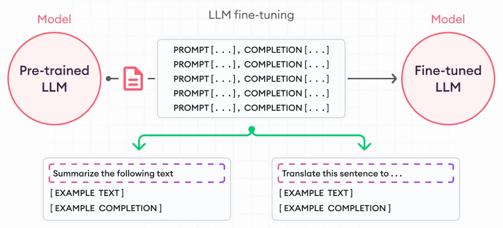
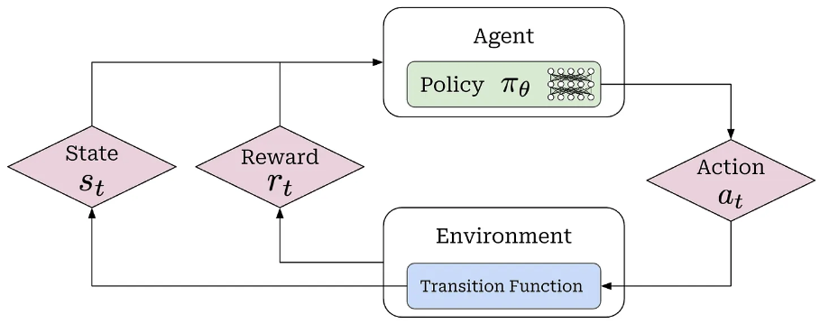
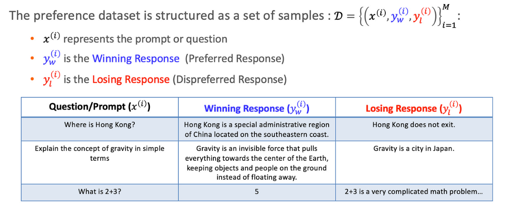
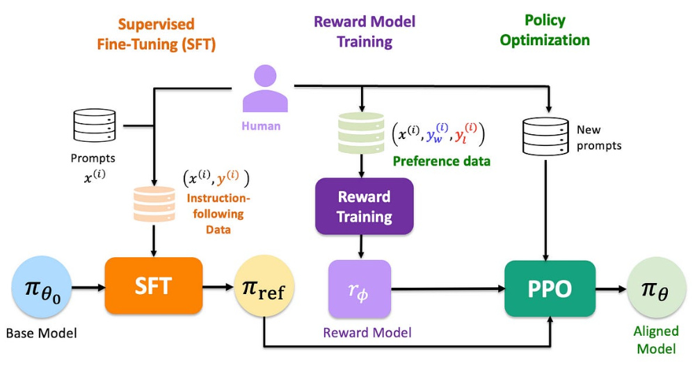

监督微调 (SFT)
经过预训练 (Pre-training) 阶段的海量文本洗礼，模型（Base Model）已经掌握了丰富的通识知识与语言结构，本质上成为了一台强大的“续写机器”（Next Token Predictor）。
然而，预训练模型往往缺乏对人类指令的遵循能力。例如，当输入“中国的首都是哪里？”时，模型可能会根据概率续写“...这个问题在地理考试中很常见”，而非直接回答“北京”。
监督微调（SFT）的核心目标，就是通过高质量的指令数据，将这种“续写能力”引导为符合人类预期的“对话与指令遵循能力”。SFT 不仅是教会模型说话的格式，更是在确立模型的能力边界与基础价值观。

监督微调的优化目标
在训练大型语言模型（LLM）时，监督微调（Supervised Fine-Tuning, SFT）是关键步骤。
SFT 与预训练最大的区别在于数据结构的变化。预训练关注无监督的文本流，而 SFT 则聚焦于结构化的“指令-回复”数据对。
在现代深度学习（尤其是LLM）中，绝大多数训练目标本质上都是在做“最大似然估计”（即最小化负对数似然）。在“大模型的建模”章节里，我们总结一个“最小化负对数似然函数”的模版，并成功得到了监督微调阶段的优化目标。
这里，我们使用一个更加“原始”的模版，所有基于最大似然估计的损失函数都可以写作：
L(模型参数)=−E数据∼Dlog(模型预测“正确事件”发生的概率) 那么，SFT的目标是最大化模型生成训练集中目标回答的概率，其损失函数可以写为：
LSFT(θ)=−E(x,y)∼DSFT[logπθ(y∣x)] - (x,y)∼DSFT：表示数据是从SFT数据集DSFT中采样出来的。
- x：输入的Prompt（指令），例如“请解释牛顿第二定律”。
- y：目标的Response（回答），即Ground Truth，例如“物体加速度的大小跟...”
- ∼：表示“服从分布”或“从中采样”。
- E：期望 (Expectation)。它的数学含义是对整个数据分布求平均。在实际训练中，我们无法计算整个分布的期望，而是通过Mini-batch（小批量）数据的平均损失来近似这个期望。
- πθ(y∣x)：这是模型的核心，输出的是概率值。
- 在NLP中，它是语言模型：给定上文x，生成下文y的条件概率。
- 在RL (强化学习) 中，被称为策略 (Policy)：给定状态x，采取动作y的概率。
- πθ表示这个概率分布是由参数θ决定的。
对齐差距与价值观漂移
许多人认为SFT只是教会模型“如何对话”。但最新的研究 揭示了一个更深层的现象：SFT阶段实际上确立了模型的大部分能力边界和价值观倾向。
最近的研究（如OpenReview和arXiv）利用Llama-3和Qwen-3进行了一系列对照实验，得出了关于SFT局限性的重要结论：
- 价值观的快速确立：模型在SFT的早期阶段（Early Stage）就会迅速习得数据集中蕴含的价值观（例如政治倾向、道德判断）。SFT是模型价值观的主要驱动力。
- RLHF的修正局限：后续的RLHF/DPO阶段很难逆转 SFT阶段确立的基础价值观。如果SFT数据集存在严重的偏见，仅靠后续的偏好对齐很难完全纠正。RLHF更多是在做“微调（Fine-tuning）”——即在SFT确立的概率分布附近进行局部优化，提升“拒绝回答有害问题”的概率，而不是重塑世界观。
- 幻觉（Hallucination）的来源：SFT强迫模型回答所有问题。如果SFT数据中包含模型在预训练阶段未见过的知识，模型会学会“胡说八道”以满足指令格式。这种“依从性（Compliance）”是幻觉的主要来源之一 。
洞察：SFT就像是给模型进行“基础教育”和“人格设定”。如果这一步走歪了，后续的“岗前培训”（RLHF）很难通过简单的奖惩机制将其完全纠正。因此，数据策展（Data Curation）在SFT阶段至关重要。
对齐微调
SFT训练出的模型（记作参考模型πref）虽然流利，但它存在一个根本问题：它优化的目标是“模仿数据”，而不是“满足人类意图”。 - Helpfulness（有用性）：对于一个问题，可能存在多个事实上都正确的答案。SFT无法区分哪个答案更简洁、更有帮助。
- Harmlessness（无害性）：模型可能会生成看似合理但实际上有害或包含偏见的回答。SFT的目标函数并不直接惩罚这些行为。
这就引出了对齐（Alignment）的需求：让模型的行为与人类的价值观和偏好保持一致。
但是人类偏好难以用一个简单的、可微分的损失函数来定义。我们如何将这种主观信号转化为可优化的目标？
RLHF框架概述
RLHF (Reinforcement Learning from Human Feedback) 是解决对齐问题的主流范式。其核心思想是：利用人类反馈构建一个奖励信号（Reward Signal），然后使用强化学习来优化模型。
- 监督微调 (SFT)：训练出一个初始模型πref，作为后续优化的起点。
- 奖励建模 (Reward Modeling, RM)：训练一个独立的模型rϕ，用来模拟人类对回答质量的判断。
- 强化学习微调 (RL Fine-tuning)：使用奖励模型rϕ作为反馈信号，通过PPO等算法优化策略模型πθ。
强化学习的基本要素
在传统监督学习（如SFT）中，我们关注的是“预测下一个词的准确率”。而在RLHF中，我们把语言模型看作一个决策者。为了用强化学习算法来优化它，必须定义清楚RL的基本要素：
- 智能体 (Agent) /策略 (Policy)πθ：这就是我们要训练的大语言模型（LLM）。
在RL中，“策略”是指决定在某种情况下该做什么的规则。对于LLM，这个“规则”就是神经网络的参数θ，它决定了给定上文时，输出各个词的概率分布。 - 状态 (State)s：在语言生成过程中，“状态”就是当前时刻之前所有已经存在的文本。
这包括了最开始用户输入的Promptx，以及模型到现在为止已经生成出来的所有Token。随着模型每生成一个新词，状态就会发生变化（变长了）。模型需要根据这个“当前状态”来决定下一步操作。 - 动作 (Action)a：从词表中选择的下一个Token。
在传统的RL比如走迷宫中，动作可能只有“上下左右” 4个。但在LLM中，动作空间 (Action Space) 极大，通常是词表的大小（例如32,000到100,000个选项）。模型在每一步都要从这几万个选项中选择一个作为动作。
- 奖励 (Reward)r：奖励模型输出的一个标量数值 (scalar)，用于评价整个生成序列的好坏。
这是RL的核心驱动力。模型生成完一段完整的回答后，环境（在这里是奖励模型）会给出一个分数。分数越高，代表回答越符合人类偏好。RL算法的目标就是调整模型参数，让它在未来生成的回答能获得更高的分数。
cameronrwolfe.substack.com/p/ppo-llm
奖励模型：量化人类偏好
目前来看，只有“奖励”我们无法获取。因此我们需要训练一个独立的神经网络rϕ作为奖励模型RM（充当裁判），给LLM的回答打分。 那么如何收集训练RM所需的数据？让人类进行绝对打分（例如1到10分）是不可行的，因为这种评分极其主观且方差很大。
例如，你让人类标注员给一个回答打1-10分，会遇到严重问题：
- 主观校准难：标注员A觉得“7分”是很好的回答，标注员B觉得“7分”只是及格。
- 不稳定性：同一个标注员在心情不同时，对同一质量的回答给分可能不同。
因此，更稳健的方法是成对比较（Pairwise Comparison）。
我们给标注员看同一个问题x的两个不同回答yA和yB，只问：“哪个更好？”这大大降低了认知负担。人类非常擅长做相对判断（A比B好），而不擅长做绝对定量的判断。这种数据（yw胜者，yl败者）的一致性远高于打分数据。 此时，我们收集到的偏好数据集形式为Dpref={(x(i),yw(i),yl(i))}i=1N。 
收集了成对数据后，我们发现，目前只有“A比B好”这种偏好关系，而没有直接的打分。而要训练一个能打分的奖励模型，肯定是需要有分数的。
我们需要一个公式，将数据的“偏好关系”与具体的“奖励分数”搭建起桥梁。这就是Bradley-Terry模型的作用。
原理：BT模型假设人类选择yw优于yl（记作yw≻yl）的概率，取决于两者奖励分数之间的差异。差异越大，概率越接近1。 胜者比败者好的概率P(yw≻yl∣x)=偏好关系与奖励分数建立联系σ(rϕ(x,yw)−rϕ(x,yl)) 这个公式非常优雅，因为它只关心奖励的相对差异，而不关心绝对值。
- 奖励模型rϕ(x,y)：即我们的奖励模型神经网络，输入是问题和回答，输出是一个实数分数。
- rϕ(x,yw)：胜者得到的预测分数。
- rϕ(x,yl)：败者得到的预测分数。
- 分差 (Score Difference)：公式的核心在于rϕ(x,yw)−rϕ(x,yl)。
- 如果胜者的分数比败者高，这个差值就是正数。
- 如果胜者的分数比败者低（模型判断错了），这个差值就是负数。
- Sigmoid函数 (σ) 的作用：σ(z)=1+e−z1将任意实数映射到(0,1)区间，表示概率。
- 如果差值为0：σ(0)=0.5。意味着如果两个回答分数一样，谁胜出的概率各占50%。
- 如果差值为正大数：σ(正数)>0.5。差值越大，概率越接近1。这表示如果模型认为yw的分数远高于yl，那么yw胜出的概率就极高。
- 如果差值为负数：σ(负数)<0.5。表示模型认为胜出者反而得分低，这违背了事实，概率会很低。
从这里可以看出来，这个公式的本质是“胜者比败者好”的概率，那么，我们希望这个概率越接近1越好。这就引出了奖励模型的优化目标。
最后，我们需要训练这个奖励模型rϕ。训练的目标是：对于人类标注的数据集中的每一对(yw,yl)，模型预测yw的分数都应该显著高于yl的分数，也就是“胜者比败者好”的概率P(yw≻yl∣x)越大越好。 L(模型参数)=−E数据∼Dlog(模型预测“正确事件”发生的概率) LRM(ϕ)=−E(x,yw,yl)∼Dpref[P(yw≻yl∣x)]=−E(x,yw,yl)∼Dpref[logσ(rϕ(x,yw)−rϕ(x,yl))] 在训练过程中，这个损失函数不断地“推”两个分数：它在把胜者yw的分数往上推，同时把败者yl的分数往下压。最终，奖励模型学会了给那些符合人类偏好的回答打高分。 训练完成后，我们就得到了一个可以对任意输入输出对打分的“虚拟裁判”。
RLHF的最终优化目标
现在，强化学习的几大要素都全了。我们可以使用奖励模型rϕ（冻结参数）来优化策略模型πθ（需要被微调的LLM）。首先，πθ被初始化为πref。 θmaxEx∼D,y∼πθ(⋅∣x)[rϕ(x,y)] 这样，模型πθ为了得到更多的奖励（来自奖励模型的打分），就会尽可能地输出“高质量”的文本。 但是，奖励模型rϕ只是人类偏好的一个不完美的代理。如果仅仅最大化奖励，模型很快会学会“钻空子”，这种现象称为奖励破解（Reward Hacking）。模型可能会生成一些在rϕ看来分数很高，但实际上是乱码或无意义的句子（例如，重复奉承的话）。这是因为模型过度优化了代理目标，导致偏离了正常的语言分布。 为了防止Reward Hacking，我们需要确保模型在优化的同时，不能偏离原始的SFT模型πref太远。因为πref代表了基本的语言能力和知识，我们只希望在此基础上进行微调。 我们使用KL散度（Kullback-Leibler Divergence）来衡量新策略πθ和参考策略πref之间的分布差异，并将其作为惩罚项加入目标函数。 θmaxEx∼D,y∼πθ[rϕ(x,y)−βlogπref(y∣x)πθ(y∣x)] - rϕ(x,y)：外部奖励。鼓励模型生成符合人类偏好的回答。
- βlogπref(y∣x)πθ(y∣x)：KL惩罚项。这可以被直观地理解为一种“约束”。如果新模型πθ生成某个回答y的概率远大于旧模型πref，说明模型偏离过远，就会受到一个大的惩罚（总奖励降低）。
- β：KL惩罚系数。用于权衡奖励最大化和保持与参考模型相似性之间的关系。
我们现在有了一个明确的优化目标。但是，如何稳定地优化这个目标是一个巨大的挑战。PPO (Proximal Policy Optimization) 是目前解决这个挑战的标准算法。
PPO 近端策略优化
在理解PPO之前，必须先理解为什么强化学习（RL）的优化比监督学习（SL）困难得多。
- 监督学习 (SL)：我们有一个静态数据集D={(x,ytrue)}。假设训练数据服从分布Pdata。无论我们的模型参数θ如何变化，数据集的数据分布Pdata是固定的。我们可以放心地计算梯度并更新参数。
- 强化学习 (RL)：此时没有固定的数据集。数据是由当前策略πθ与环境交互产生的，也就是“数据”是由当前模型自己创造的。
- 动态循环：例如LLM观察输入x，生成回答y，获得奖励r，形成训练样本(x,y,r)，以此更新自身的参数θ→θ′。
- 分布漂移：这意味着，训练数据的分布依赖于当前的策略参数，参数一旦更新，策略就会发生变化，它随后生成的回答分布（即新的训练数据）也会随之发生。这种数据的非平稳性（Non-stationarity）是 RL 训练不稳定的根本原因。
- 步长困境：如果我们在一步更新中让θ变化太大，新策略产生的轨迹可能与旧策略截然不同。由于RL通常使用重要性采样 (Importance Sampling)（即利用旧策略收集的数据来估计新策略的梯度），当两个分布差异过大时，重要性采样的方差会趋于无穷大。
- 后果：这种数值上的不稳定会导致“策略崩溃 (Policy Collapse)”，即模型性能断崖式下跌，且无法恢复。
为了解决这个问题，PPO的思想是找到一种方法，在保证策略能提升（Maximize Reward）的同时，严格限制新旧策略之间的差异（Constraint Constraint），使其保持在“信任域 (Trust Region)”内。
PPO的核心机制
PPO通过一个精心设计的目标函数来实现这种“近端”约束。我们需要引入几个关键概念。
我们需要评估一个生成的回答y到底有多“好”。我们关心的不仅仅是绝对奖励，而是这个回答相比于当前策略的平均表现“好多少”。这就是优势（Advantage）A(x,y)。 - 如果A>0，表示这个回答比平均水平好，我们应该增加其概率。
- 如果A<0，表示这个回答比平均水平差，我们应该减少其概率。
为了估计优势函数，PPO采用Actor-Critic架构，这需要训练一个额外的价值模型 (Critic) 来估计平均表现（Baseline）。
我们使用旧策略πold（上一个迭代步的模型）收集数据（采样分布），并用这些数据来更新当前策略πθ（目标分布）。为了衡量策略的变化幅度，我们定义新旧策略的概率比率r(θ)： r(θ)=πold(y∣x)πθ(y∣x) 这个比率r(θ)直接量化了新旧策略的距离： - r=1：新策略和旧策略在这个动作上的概率完全一致。
- r>1：新策略比旧策略更倾向于选择这个动作。
- r<1：新策略比旧策略更不倾向于选择这个动作。
如果r远离 1（例如变成了 100 或者 0.01），说明新策略发生了剧烈变化。因此，PPO的目标就是限制这个r(θ)在 1 附近波动（例如，在[0.8,1.2] 之间）。 在没有PPO之前，策略梯度的目标函数（代理目标 Surrogate Objective）通常是这样的：
LPG(θ)=E[r(θ)⋅A] 综合前面的概念，直观上，我们希望最大化这个目标：如果A>0，我们希望r(θ)变大；如果A<0，我们希望r(θ)变小。但是，直接优化它会导致r(θ)变化过大，引发策略崩溃。 限制策略的更新幅度
PPO通过裁剪（Clipping）这个概率比来限制更新幅度。这就是PPO最核心的创新点，也是最难理解、也最精彩的部分：
LCLIP(θ)=E[min(r(θ)⋅A,clip[r(θ),1−ϵ,1+ϵ]⋅A)] 其中ϵ是一个超参数（例如0.2），定义了裁剪的范围。clip(⋅)函数将r(θ)限制在[1−ϵ,1+ϵ] 区间内。 这个公式的核心是min(⋅,⋅) 操作，它实现了一种“悲观更新”（Pessimistic Update）。我们分两种情况讨论： 情况一：优势为正 (A>0) —— 这是一个“好动作” 我们希望增加该动作的概率，即希望r(θ)变大。此时目标函数希望最大化r⋅A。但模型很可能会尽可能推高r，可能把r推到 5.0 甚至更高。这导致策略剧变。因此，这里引入了截断。 min(r(θ)A,(1+ϵ)A) 如果r(θ)增加超过了1+ϵ，第二项(1+ϵ)A会更小。由于我们取最小值，目标函数就被限制在了(1+ϵ)A。这阻止了模型过于激进地增加好的输出的概率。即使某个回答非常好，我们最多也只将其概率提高到原来的1+ϵ倍（在一个更新步内），保证了稳定性。 情况二：优势为负 (A<0) —— 这是一个“坏动作” 我们希望减少该动作的概率，即希望r(θ)变小。如果不截断，模型会试图让r迅速趋近于 0。这可能导致该动作的概率瞬间归零，失去了探索性。因此，这里引入了截断。 min(r(θ)A,(1−ϵ)A) 如果r(θ)减小低于了1−ϵ，第二项(1−ϵ)A会更小（更负）。目标函数被限制在了(1−ϵ)A。这同样阻止了模型过于激进地减少坏的输出的概率。 例如，这会告诉模型：“你已经把这个坏动作的概率降到了原来的 80%，惩罚已经足够了，不要再继续降了，以免彻底扼杀这个动作的可能性。”
RLHF/PPO的总结与挑战
总之，PPO构造了一个“梯度过滤器”。它允许策略在一定范围[1−ϵ,1+ϵ]内自由优化；但一旦策略更新幅度超出这个范围，梯度就会被强行切断（置零），从而强制保证了参数更新的“近端性（Proximal）”和稳定性。基于PPO的这个“梯度过滤器”，我们就可以稳定地优化RLHF的最终优化目标了。 - 监督微调 (SFT)：训练得到一个参考策略πref。
- 奖励模型 (RM) 训练：收集人类偏好数据（例如，对于提示x，回答yw优于yl），并训练一个独立的奖励模型rϕ(x,y)来拟合这些偏好。
- 强化学习 (RL) 优化：使用PPO算法优化策略πθ。目标是最大化奖励模型的输出，同时通过KL散度约束，防止其偏离πref太远。

虽然RLHF结合PPO取得了巨大成功，但这个框架在实践中极其复杂且脆弱.
- 巨大的计算资源消耗：在PPO训练过程中，我们需要同时在GPU显存中维护至少四个大型模型实例，这带来了巨大的显存压力和计算开销。：
- Actor (πθ)：正在训练的策略模型（需要梯度）。
- Critic：用于估计优势函数（需要梯度）。
- Reference Model (πref)：用于计算KL散度（冻结）。
- Reward Model (rϕ)：用于计算外部奖励（冻结）。
- 训练不稳定性：PPO是一种在线（On-policy）强化学习算法，对超参数极其敏感。训练过程波动大，容易出现奖励崩溃或模式坍塌（例如模型开始生成无意义的文本来刷高奖励分数）。
- 调优非常困难：涉及大量的超参数（如KL系数β、裁剪阈值ϵ、学习率等）。调优过程非常困难且依赖经验，训练过程容易出现波动甚至崩溃。
- 流程复杂性：RLHF是一个多阶段过程（SFT, RM, PPO），流程冗长且难以调试。
DPO直接偏好优化
既然我们的最终目标是让策略模型πθ符合人类偏好，为什么必须绕弯路去先训练一个奖励模型rϕ，再用不稳定的强化学习去逼近它？2023年提出的DPO (Direct Preference Optimization) 给出了一个颠覆性的答案：我们可以跳过奖励模型构建和PPO循环，直接利用偏好数据对模型进行优化。 DPO将强化学习问题转化为了一个我们熟悉的分类问题（类似于监督学习），极大地提升了训练的稳定性和效率。
- PPO的方法（学习打分器）：我们首先训练一个“裁判”（奖励模型），它能给任何回答打一个绝对分数（例如7.5分）。然后让模型（策略）不断生成回答，“裁判”不断打分，模型根据分数调整自己，争取获得更高的分数。这个过程复杂且不稳定。
- DPO的方法（学习排序器）：我们不需要知道“裁判”的具体打分。我们只需要知道“回答A比回答B好”。然后直接利用这些相对偏好信息，调整模型参数，使得模型自身也认为回答A出现的概率应该显著高于回答B。
因此，在DPO中，我们不再需要一个独立的模型来提供奖励信号，因为策略模型本身就隐式地定义了奖励函数。
DPO的推导路径
为了实现这一点，DPO从分析RLHF的优化目标出发，通过一系列精妙的数学变换，最终得到了一个可以直接优化的损失函数。我们不会进行严格的数学证明，而是关注推导的关键步骤和直觉。
1️⃣分析RLHF的最优解
首先，回顾RLHF的优化目标：最大化奖励，同时施加KL约束。
θmaxEx∼D,y∼πθ[rϕ(x,y)−βlogπref(y∣x)πθ(y∣x)] 其中，在传统的RLHF中，rϕ(x,y)是需要训练得到的奖励模型函数。 这是一个凸优化问题。幸运的是，我们可以推导出这个问题的最优解π∗(y∣x)具有如下的闭式解 (Closed-form solution)： π∗(y∣x)=Z(x)1πref(y∣x)exp(βr(x,y)) 由于DPO不训练奖励模型rϕ(x,y)，因此视为底层的真实奖励函数r(x,y)，代表了人类的偏好。 - 这个公式告诉我们，最优策略π∗是参考策略πref通过指数化的奖励进行重新加权（re-weighting）的结果。如果一个回答y的奖励r很高，那么它在最优策略下的概率就会相比参考策略显著增加。
- Z(x)是一个归一化常数（Partition Function），确保所有可能的y的概率加起来等于1。对于同一个输入x，它是一个定值。
既然我们知道了最优策略π∗和奖励r的关系，我们可以对公式进行简单的代数变换，用π∗和πref来表示r。 对第一步的等式两边取对数，移项，将r(x,y)单独放在一边： r(x,y)=βlogπref(y∣x)π∗(y∣x)+βlogZ(x) 这个公式表明，“真实奖励”本质上就是“最优策略”相对于“参考策略”的对数概率比值。它意味着，奖励可以通过π∗与πref的概率比值来表示。我们不再需要一个独立的奖励模型了！ 2️⃣当成奖励模型训练
现在我们有了奖励r的表达式。这个表达式是从RLHF的优化目标推导出来的，我们也不能再代回去。因此，我们只能把r的表达式代入到其他的优化目标。此外，我们还面临两个问题：即使代入别的优化目标，我们也不知道最优策略π∗，更无法计算配分函数Z(x)。 既然“奖励”只依赖于模型（策略）自身，也就是说“策略模型本身就隐式地定义了奖励函数”，那我们为什么不直接把LLM当成奖励模型来训练呢？
回顾一下，我们是怎么得到奖励模型的目标函数的。根据前文的BT模型假设：
胜者比败者好的概率P(yw≻yl∣x)=偏好关系与奖励分数建立联系σ(rϕ(x,yw)−rϕ(x,yl)) 其中的关键部分是奖励模型的输出差值rϕ(x,yw)−rϕ(x,yl)，其中ϕ是奖励模型的参数。 既然把训练策略模型πθ当成奖励模型，那么同样地，我们定义一个由当前策略参数θ决定的隐式奖励 (Implicit Reward)rθ： rθ(x,y)=βlogπref(y∣x)πθ(y∣x)+βlogZ(x) 现在我们来计算BT模型中的差值rθ(x,yw)−rθ(x,yl)： rθ(x,yw)−rθ(x,yl)=(βlogπref(yw∣x)πθ(yw∣x)+βlogZ(x))−(βlogπref(yl∣x)πθ(yl∣x)+βlogZ(x))=βlogπref(yw∣x)πθ(yw∣x)−βlogπref(yl∣x)πθ(yl∣x) 我们发现，难以计算的函数项βlogZ(x)在相减时被完美地抵消了！ 我们把这个结果代入到BT模型中。模型预测“yw优于yl”的概率就变成了： Pθ(yw≻yl∣x)=σ(rθ(x,yw)−rθ(x,yl))=σ(βlogπref(yw∣x)πθ(yw∣x)−βlogπref(yl∣x)πθ(yl∣x)) 我们希望“胜者胜出”（正确事件）的概率越大越好，套用我们之前的最大似然估计（MLE）模版：
L(模型参数)=−E数据∼Dlog(模型预测“正确事件”发生的概率) LDPO(θ)=−E(x,yw,yl)∼D[logσ(βlogπref(yw∣x)πθ(yw∣x)−βlogπref(yl∣x)πθ(yl∣x))] DPO的总结
因此，PPO的本质就是把训练策略模型πθ当成奖励模型（裁判）来训练，让LLM学会和奖励模型一样，学会给那些符合人类偏好的回答打高分。我们知道训练奖励模型就是监督学习的过程，因此，在训练上这完全摆脱了强化学习复杂的流程。 在优化过程中，它被降维成了一个标准的监督学习任务。我们不需要处理强化学习中复杂的采样（Sampling）、探索（Exploration）或价值估计（Value Estimation），只需要像训练分类器一样，喂入数据对，计算梯度，更新参数即可。
参考模型πref和参数β在DPO中起着至关重要的作用，它们共同实现了传统RLHF中的KL散度约束。 - 参考模型作为锚点：πref（通常是SFT模型）已经具备了基本的语言能力。隐式奖励的计算依赖于与πref的比值。这确保了优化后的模型在迎合偏好的同时，不会偏离基础模型太远，从而保持语言的连贯性或事实性（防止奖励劫持Reward Hacking）。
- β控制偏离程度：β直接对应于原始RLHF目标中的KL惩罚系数。β越大，对偏离πref的惩罚越强（在DPO损失函数中表现为奖励差值被放大，使得优化更激进），模型会更积极地优化偏好；β越小，模型会更保守，更接近πref。实践中通常选择较小的β（例如0.1）。
| | |
|---|
| | |
| | |
| 在线 (Online/On-policy)。训练中需要实时采样 | |
| 高（需要加载Policy, Ref, RM, Value） | |
| | |
| | |
总结：微调范式的选择指南
后训练阶段的技术选择并非非此即彼，而是取决于具体的目标与资源。我们将三种主流对齐范式进行最终的对比总结。
| PPO (Proximal Policy Optimization) | DPO (Direct Preference Optimization) | GRPO (Group Relative Policy Optimization) |
|---|
| | | |
| 极高 (需维护Actor, Critic, Ref, Reward) | | 中 (仅Policy, Ref，但需大Batch采样) |
| | | |
| | 静态偏好数据集 (Preference Data) | |
| | | |
| | | |
| | | |
💬 评论区